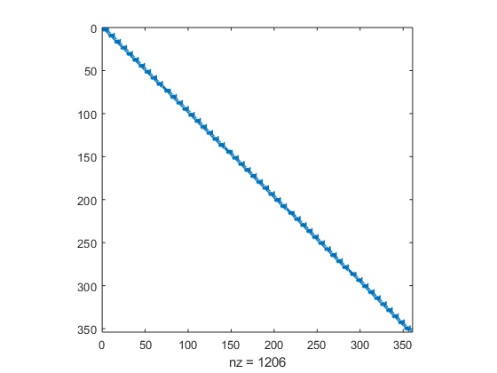
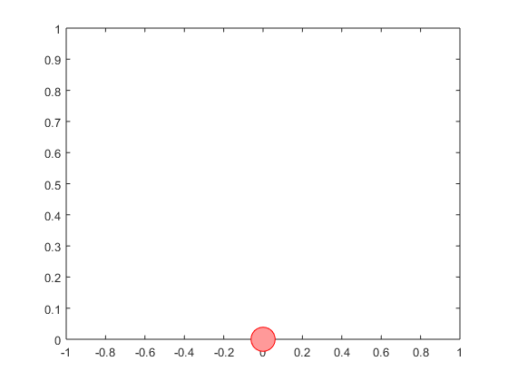

function [sol,times,solver] = bouncingball_sim(snap)
if nargin == 0
snap = 0;
end
num_phases = 5;
N = 10;
phase0 = ocl.Phase([], @vars, @ode, 'N', N, 'd', 2);
phase = ocl.Phase([], @vars, @ode, 'N', N, 'd', 2);
phase0.setInitialStateBounds('s', 1);
phase0.setInitialStateBounds('v', 0);
phase0.setEndStateBounds('s', 0);
phase.setEndStateBounds('s', 0);
solver = OclSolver(num2cell([phase0,repmat(phase,1,num_phases-1)]), ...
repmat({@transition},1,num_phases-1));
[sol,times] = solver.solve(solver.getInitialGuess());
figure
spy(full(solver.jacobian_pattern(sol)))
vw = VideoWriter(fullfile(getenv('OPENOCL_WORK'),'bouncingball.avi'));
vw.FrameRate = 30;
open(vw)
fig = figure;
h = plot(0,0,'o', 'Markersize', 20, 'MarkerEdgeColor','red', 'MarkerFaceColor',[1 .6 .6]);
ylim([0 1])
for k=1:num_phases
t = times{k}.states(1:end).value;
s = sol{k}.states.s(1:end).value;
t_new = linspace(0, max(t), 31);
s_new = interp1(t,s,t_new);
for j=2:length(s_new)
tic;
set(h, 'YData', s_new(j))
frame = getframe(fig);
writeVideo(vw,frame);
if snap > 0 && mod(k,snap) == 0
snapnow;
end
pause(t_new(j)-t_new(j-1)-toc)
end
end
close(vw)
end
function vars(sh)
sh.addState('s');
sh.addState('v');
end
function ode(sh,x,~,~,~)
sh.setODE('s', x.v);
sh.setODE('v', -10);
end
function transition(ch, x0, xF)
ch.add(x0.s, '==', xF.s);
ch.add(x0.v, '==', -xF.v/sqrt(2));
end
This is Ipopt version 3.12.3, running with linear solver mumps.
NOTE: Other linear solvers might be more efficient (see Ipopt documentation).
Number of nonzeros in equality constraint Jacobian...: 1193
Number of nonzeros in inequality constraint Jacobian.: 0
Number of nonzeros in Lagrangian Hessian.............: 100
Total number of variables............................: 353
variables with only lower bounds: 50
variables with lower and upper bounds: 0
variables with only upper bounds: 0
Total number of equality constraints.................: 353
Total number of inequality constraints...............: 0
inequality constraints with only lower bounds: 0
inequality constraints with lower and upper bounds: 0
inequality constraints with only upper bounds: 0
iter objective inf_pr inf_du lg(mu) ||d|| lg(rg) alpha_du alpha_pr ls
0 0.0000000e+000 1.00e+000 1.00e+000 -1.0 0.00e+000 - 0.00e+000 0.00e+000 0
1 0.0000000e+000 1.60e-001 1.76e+000 -1.7 2.00e+000 - 1.00e+000 1.00e+000h 1
2 0.0000000e+000 1.60e-001 2.03e+001 -1.7 4.00e+000 - 4.34e-001 1.00e+000f 1
3 0.0000000e+000 1.78e-002 4.44e+000 -1.7 1.33e+000 - 1.00e+000 1.00e+000h 1
4 0.0000000e+000 3.63e-004 1.93e-001 -1.7 1.90e-001 - 1.00e+000 1.00e+000h 1
5 0.0000000e+000 1.64e-007 1.51e-003 -2.5 4.05e-003 - 1.00e+000 1.00e+000h 1
6 0.0000000e+000 3.37e-014 1.20e-007 -3.8 1.84e-006 - 1.00e+000 1.00e+000h 1
Number of Iterations....: 6
(scaled) (unscaled)
Objective...............: 0.0000000000000000e+000 0.0000000000000000e+000
Dual infeasibility......: 0.0000000000000000e+000 0.0000000000000000e+000
Constraint violation....: 3.3667513221757872e-014 3.3667513221757872e-014
Complementarity.........: 0.0000000000000000e+000 0.0000000000000000e+000
Overall NLP error.......: 3.3667513221757872e-014 3.3667513221757872e-014
Number of objective function evaluations = 7
Number of objective gradient evaluations = 7
Number of equality constraint evaluations = 7
Number of inequality constraint evaluations = 0
Number of equality constraint Jacobian evaluations = 7
Number of inequality constraint Jacobian evaluations = 0
Number of Lagrangian Hessian evaluations = 6
Total CPU secs in IPOPT (w/o function evaluations) = 0.015
Total CPU secs in NLP function evaluations = 0.000
EXIT: Optimal Solution Found.
t_proc [s] t_wall [s] n_eval
my_solver 0.016 0.016 1
nlp_f 0 0 7
nlp_g 0 0 7
nlp_grad_f 0 0 8
nlp_hess_l 0 0 6
nlp_jac_g 0.001 0.001 8
ans =
OclAssignment with content:
{
Variable:
Size: [72 1]
Type: OclStructure
Children: states, integrator, controls, parameters, h
Value: [1;0;0.998889;-0.149071;0.99;-0.447214;0.0447214;0.99;-0.447214;0.982222;-0.596285;0.96;-0.894427;0.0447214;0.96;-0.894427;0.945556;-1.0435;0.91;-1.34164;0.0447214;0.91;-1.34164;0.888889;-1.49071;0.84...
Variable:
Size: [72 1]
Type: OclStructure
Children: states, integrator, controls, parameters, h
Value: [0;3.16228;0.0644444;2.95146;0.18;2.52982;0.0632456;0.18;2.52982;0.231111;2.319;0.32;1.89737;0.0632456;0.32;1.89737;0.357778;1.68655;0.42;1.26491;0.0632456;0.42;1.26491;0.444444;1.05409;0.48;0.632456;...
Variable:
Size: [72 1]
Type: OclStructure
Children: states, integrator, controls, parameters, h
Value: [0;2.23607;0.0322222;2.087;0.09;1.78885;0.0447214;0.09;1.78885;0.115556;1.63978;0.16;1.34164;0.0447214;0.16;1.34164;0.178889;1.19257;0.21;0.894427;0.0447214;0.21;0.894427;0.222222;0.745356;0.24;0.4472...
Variable:
Size: [72 1]
Type: OclStructure
Children: states, integrator, controls, parameters, h
Value: [0;1.58114;0.0161111;1.47573;0.045;1.26491;0.0316228;0.045;1.26491;0.0577778;1.1595;0.08;0.948683;0.0316228;0.08;0.948683;0.0894444;0.843274;0.105;0.632456;0.0316228;0.105;0.632456;0.111111;0.527046;0...
Variable:
Size: [72 1]
Type: OclStructure
Children: states, integrator, controls, parameters, h
Value: [0;1.11803;0.00805556;1.0435;0.0225;0.894427;0.0223607;0.0225;0.894427;0.0288889;0.819892;0.04;0.67082;0.0223607;0.04;0.67082;0.0447222;0.596285;0.0525;0.447214;0.0223607;0.0525;0.447214;0.0555556;0.3...
}
 